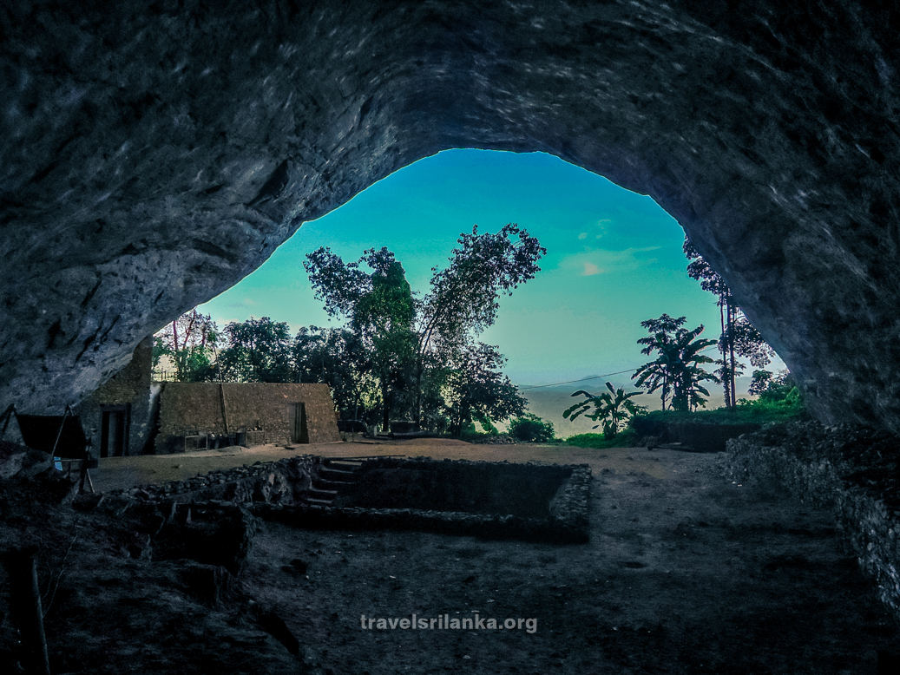

Our Blog
Tourism in Sri Lanka is growing rapidly. For centuries, Sri Lanka has been a popular place of attraction for foreign travelers. The Chinese traveler Fa-Hien visited Sri Lanka as early as the 410's AD/CE, and in the twelfth century, Italian explorer Marco Polo claimed Sri Lanka to be the "best island of its size in the world".
Tourism
The government initiatives in development of tourism date back to 1937 when the Ceylon Tourist Bureau was established. However, it was closed down in September 1939 due to World War II. After Sri Lanka's independence the promotion of tourism was again considered by re-establishing the Ceylon Tourist Board which took over the function of the Tourist Bureau. In 1965, J. R. Jayewardene as Minister of State initiated the first major development of the tourism industry with the Ceylon Tourist Board Act No 10 of 1966 and the Ceylon Hotels Corporation Act No 14 of 1966, which formed the Ceylon Tourist Board and the Ceylon Hotels Corporation. Since then the Ceylon Tourist Board has functioned as the state agency, responsible for development and promotion of the tourism sector in Sri Lanka. Ceylon Hotels Corporation paved the way government investments build hotels needed to attract tourist. In October 2007 according to Section 2 of the Tourism Act No. 38 of 2005, the Sri Lanka Tourist Board (Act No 10 of 1966) was replaced by the Sri Lanka Tourism Development Authority (SLTDA). Currently Sri Lanka Tourism Development Authority has classified Sri Lanka into several resort regions suitable for tourism development. Colombo and Greater Colombo Resort Region: The Colombo and Greater Colombo Resort Region spreads along the Mount Lavinia in the south to Negombo in the north. Colombo city is the main part of the zone, and is the center for business activities, conferences and sport events in the country. Colombo serves as both a gateway and stopover point for international tourists. South Coast Resort Region: The south coast zone extends from Wadduwa to Tissamaharama. The zone has been divided into two main regions. The first region extends from Wadduwa to Galle. Coastal areas like Kalutara, Beruwala, Bentota, Dedduwa, Madu Ganga, Balapitiya, Ahungalla, and Hikkaduwa are included in this region. The second region, extending from Galle to Tissamaharama, includes Unawatuna, Koggala, Weligama, Mirissa, Matara, Tangalle and Hambantota areas as sub-points of the zone. East Coast Resort Region: The East Coast Resort Region extends from Kuchchaveli in the north to Pottuvil in the south. The main tourism zones in this region are Arugam Bay, Pasikudah, Trincomalee and Nilaveli. West Coast Resort Region: The West Coast Resort Region extends along Kalpitiya, Marawila and Waikkala areas. High Country Resort Region: Nuwara Eliya, Bandarawela and Maskeliya are included for the High Country Resort Region. Ancient Cities Resort Region: This region has five world heritage sites, namely Anuradhapura, Dambulla, Kandy, Polonnaruwa and Sigiriya. Other regions include Habarana, Giritale, Matale and Victoria. Other Resort Regions: This includes Yala, Udawalawa, Wasgamuwa, Pinnawala, and Ratnapura, Knuckles Range area. Shared Tourism with India In the past, ferry services between India and Sri Lanka for tourists have been introduced and suspended repeatedly because of their low usage.The low usage of the old ferry services could be due to the high cost of the former services. As of now, the only way for tourists to access India from Sri Lanka is by air. In 2019 negotiations about ferry services between Colombo and Tuticorin and between Talaimannar and Rameshwaram began. There is also a proposal to operate a cruise/ferry service between Colombo and Kochi in Kerala. The Indian and Sri Lankan governments are working close together to connect the two neighboring countries better.The Sri Lankan minister of Tourism Development John Amaratunga indicated that a ferry service will help tourists from both sides to travel at a very low cost
Tourist arrivals
 When the government decided to develop the tourism sector as a separate sector of the country's economy by establishing the Ceylon Tourist Bureau in 1966, there were 18,969 foreign tourist arrivals in Sri Lanka. There was an upward trend of tourist arrivals until 1982, with the exception of 1971. Between 1976 and 1982, tourist arrivals had increased 24% per year. The tourist traffic in 1982 showed that there was a remarkable growth in number of tourists, with 407,230 arrivals. However, with the beginning of the civil war in 1983, the growth of tourist arrivals declined and stagnated to around 300,000 – 500,000 arrivals annually.
The civil war that had lasted over 25 years was ended in 2009 as LTTE separatists were defeated by government forces. In 2009 the tourist arrivals numbered 448,000, and in 2015, 1,798,380, showing over 300 percent growth in six years.
When the government decided to develop the tourism sector as a separate sector of the country's economy by establishing the Ceylon Tourist Bureau in 1966, there were 18,969 foreign tourist arrivals in Sri Lanka. There was an upward trend of tourist arrivals until 1982, with the exception of 1971. Between 1976 and 1982, tourist arrivals had increased 24% per year. The tourist traffic in 1982 showed that there was a remarkable growth in number of tourists, with 407,230 arrivals. However, with the beginning of the civil war in 1983, the growth of tourist arrivals declined and stagnated to around 300,000 – 500,000 arrivals annually.
The civil war that had lasted over 25 years was ended in 2009 as LTTE separatists were defeated by government forces. In 2009 the tourist arrivals numbered 448,000, and in 2015, 1,798,380, showing over 300 percent growth in six years.
Leave a comment